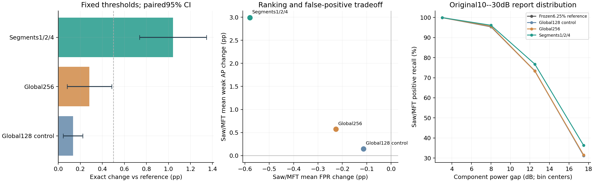

主阈值固定；只改SawFM/MFT。训练、选型和独立报告完成后复核，不修改权重、阈值或选择。
开始：2026-11-05T12:14:49+08:00；完成：2026-11-05T12:31:07+08:00；check预选：segments124。
| 方法 | Exact% | Saw弱召回% | MFT弱召回% | 两目标弱AP% | 两目标FPR% |
|---|---|---|---|---|---|
| anchor_pair1 | 74.683 | 51.582 | 70.138 | 77.911 | 4.322 |
| frozen_natural | 74.663 | 49.517 | 68.417 | 77.354 | 3.919 |
| global128 | 74.816 | 51.785 | 70.117 | 78.059 | 4.209 |
| global256 | 74.965 | 52.009 | 69.904 | 78.485 | 4.095 |
| segments124 | 75.724 | 52.615 | 76.791 | 80.903 | 3.742 |
global128_vs_pair1：Exact +0.134pp，条件95%区间[+0.045,+0.223]；正式门槛未全部通过。
global256_vs_pair1：Exact +0.283pp，条件95%区间[+0.080,+0.485]；正式门槛未全部通过。
segments124_vs_pair1：Exact +1.042pp，条件95%区间[+0.739,+1.345]；正式门槛通过。
global256_vs_global128：Exact +0.149pp，条件95%区间[-0.030,+0.328]；正式门槛未全部通过。
segments124_vs_global128：Exact +0.908pp，条件95%区间[+0.665,+1.151]；正式门槛通过。
| 种子 | 特征 | 输入维数 | 保留方差% | 冻结PCA系数 |
|---|---|---|---|---|
| 2050 | global128 | 128 | 100.000 | 16384 |
| 2050 | global256 | 256 | 99.471 | 32768 |
| 2050 | segments124 | 1792 | 94.783 | 229376 |
| 2051 | global128 | 128 | 100.000 | 16384 |
| 2051 | global256 | 256 | 99.383 | 32768 |
| 2051 | segments124 | 1792 | 94.177 | 229376 |
| 2052 | global128 | 128 | 100.000 | 16384 |
| 2052 | global256 | 256 | 99.410 | 32768 |
| 2052 | segments124 | 1792 | 94.629 | 229376 |
| 2053 | global128 | 128 | 100.000 | 16384 |
| 2053 | global256 | 256 | 99.413 | 32768 |
| 2053 | segments124 | 1792 | 94.357 | 229376 |
| 2054 | global128 | 128 | 100.000 | 16384 |
| 2054 | global256 | 256 | 99.449 | 32768 |
| 2054 | segments124 | 1792 | 94.540 | 229376 |
| 方法 | 标签 | 召回% | AP% | AUROC% | FP数均值 | FN数均值 |
|---|---|---|---|---|---|---|
| anchor_pair1 | SawFM | 26.794 | 26.000 | 79.656 | 166.2 | 488.6 |
| anchor_pair1 | MFT | 35.539 | 34.355 | 84.499 | 176.8 | 293.0 |
| frozen_natural | SawFM | 25.115 | 25.028 | 79.357 | 148.0 | 510.6 |
| frozen_natural | MFT | 33.011 | 33.133 | 84.017 | 163.0 | 310.2 |
| global128 | SawFM | 26.870 | 26.232 | 79.729 | 161.6 | 484.2 |
| global128 | MFT | 35.465 | 34.609 | 84.680 | 172.4 | 293.4 |
| global256 | SawFM | 27.939 | 27.706 | 79.963 | 152.4 | 480.6 |
| global256 | MFT | 35.019 | 34.749 | 84.707 | 172.6 | 295.0 |
| segments124 | SawFM | 28.550 | 27.677 | 80.058 | 157.4 | 472.6 |
| segments124 | MFT | 43.866 | 45.610 | 89.258 | 139.6 | 225.2 |
PCA只用自然训练身份拟合，均值/标准差及身份SHA独立重放；新提取的训练特征与历史冻结特征一致。其他四类输出不变、批次抽样相同和报告冻结顺序均有完成审计。PCA丢弃低方差弱证据的可能性尚未排除；阴性结果不能否定全部时序方法。固定池五种子条件区间及同一仿真器仍限制结论。
